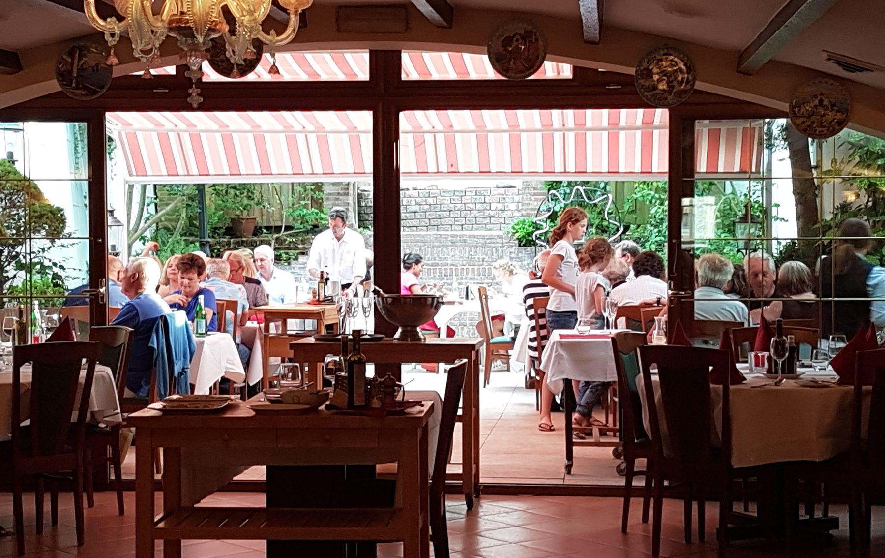
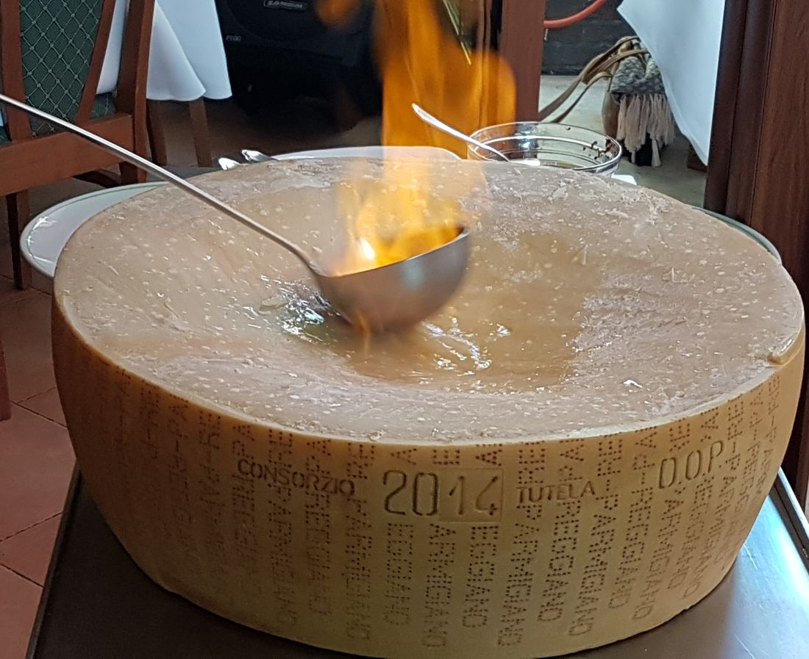
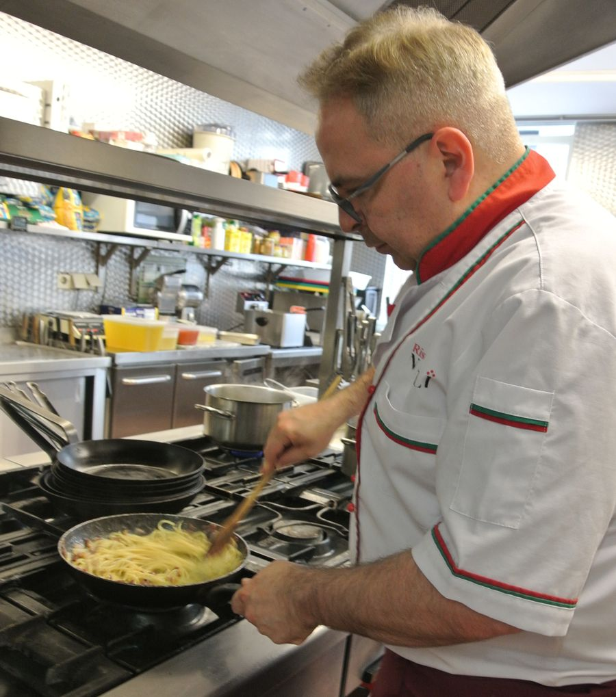

Italiaans eten, bij u aan tafel bereid
Sinds 1982 aan de Kerkstraat in Bergen op Zoom. Veel gerechten maken we bij u aan tafel af of flamberen we waar u bij zit.
Van onze kaart
Verse pasta, Hollandse ossenhaas en vis, op de Italiaanse manier. Klik op een gerecht voor meer.

Geflambeerd waar u bij zit
Bij Napoli gebeurt een deel van het koken in het restaurant zelf. Carpaccio snijden we à la minute en maken we aan tafel af. Onze Pasta al Parmigiano flamberen we met whisky in een hele Parmezaanse D.O.P. kaas. Noordzeetong fileren we bij u aan tafel.
- Pasta al Parmigiano D.O.P.€ 17,25
- Filetto alla Napoletana (flambé, p.p.)€ 41,95
- Crêpes Napoli (dessert, p.p.)€ 19,95
Bekroond met de eerste prijs “Cuoco d’oro Internazionale 1975”. Kalfsmedaillons met gemarineerde groenten, pasta bolognese en pasta in pikante tomatensaus. € 31,25

Sinds 1982 aan de Kerkstraat
In 1982 opende Ristorante Napoli zijn deuren in Bergen op Zoom. We vinden het belangrijk dat onze gasten ongedwongen kunnen genieten, in een gastvrij restaurant waar smaak en kwaliteit hoog staan.
Op de kaart staan traditionele Italiaanse specialiteiten naast vernieuwende gerechten. Pasta maken we vers, en we koken à la minute. Daardoor kunnen we de meeste gerechten aanpassen aan uw dieetwens.
Napoli thuis of als cadeau
Alle gerechten en menu's van de kaart kunt u ook afhalen. Of geef een avondje Napoli cadeau.
Afhalen
- Bestel telefonisch of online, ook al van tevoren.
- Haal uw gerechten op. Ze zijn klaar, u hoeft thuis niets meer te koken.
- Neemt u voor- en hoofdgerecht mee? Zet het hoofdgerecht in de oven op 100 graden, dan blijft het op temperatuur.
Bij iedere bestelling krijgt u brood en kruidenboter van ons.
Bel 0164 24 37 04Dinerbonnen
Dinerbonnen bestelt u voor ieder gewenst bedrag. Ophalen en betalen in het restaurant vanaf 16:30 uur, behalve op donderdag.
Bestellen via info@napolibergenopzoom.nl of telefonisch.
Reserveer een tafel
Elke avond geopend vanaf 17:00, behalve op donderdag. Bij mooi weer zit u op ons terras in de tuin.
Reserveren
Reserveer online of bel ons even. Dieetwens? Laat het ons dan meteen weten.
Openingstijden
- Maandag17:00 – 22:30
- Dinsdag17:00 – 22:30
- Woensdag17:00 – 22:30
- Donderdaggesloten
- Vrijdag17:00 – 22:30
- Zaterdag17:00 – 22:30
- Zondag17:00 – 22:30
Werken bij Napoli? We zoeken een hulpkok, bediening, leerling gastheer/gastvrouw en leerling kok.
Stuur je sollicitatie →